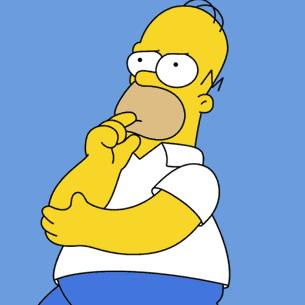
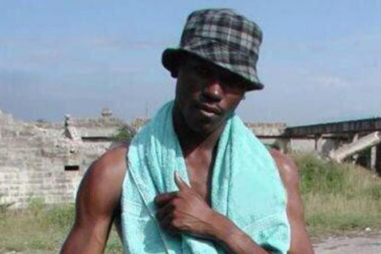
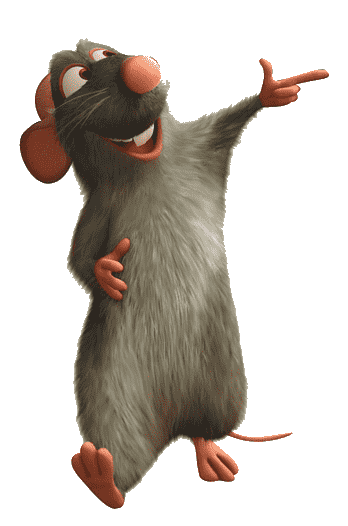
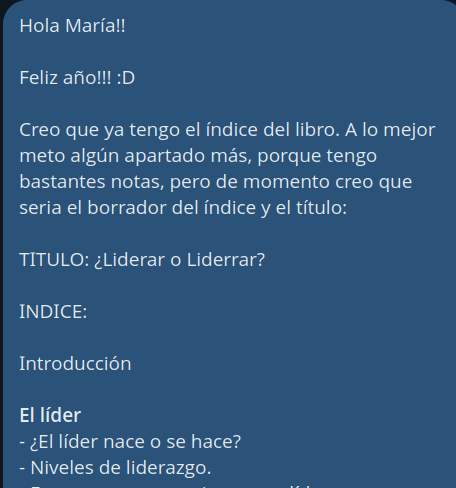
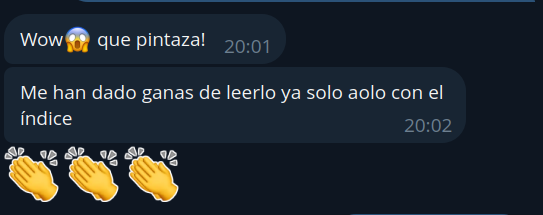

Gracias
Gracias por estar aquí.
Gracias por vuestro afecto.
El Origen del Libro
Una semilla plantada en junio de 2023...
"¿Mánu, por qué no escribes un libro?"
Primeras Ideas
"De esto podría yo escribir un libro..."




El Proceso
Escribir sin presión, disfrutando el camino.
Escribiendo
Comencé el 19 de noviembre de 2023
Primer título: "Liderar o liderrar"
Tomando forma
3 de enero de 2024


Liderazgo afectivo
El Prólogo
Jorge del Casar aceptó sin dudar.
Continuando el proceso de escritura
Terminado
Terminé de escribirlo el 25 de Julio de 2024
Revisiones y Maquetación
Un proceso que desconocía por completo...
Diseño


Un Viaje de 17 Meses
Un viaje de autodescubrimiento.
- Constante liderando: el afecto.
- Los retos se enfrentaban mejor.
El Libro
Reflexión y Debate
El Desafío Actual
"Menores de edad intelectuales"
Educamos la mente sin educar el corazón
Todo tiene que ser ciencia
Liderazgo y Dirección
Quien gestiona bien consigue que su equipo se adapte al cambio,
Quien lidera bien hace que su equipo progrese gracias al cambio.
Pensamiento Crítico
El peligro de la falta de criterio
Liderazgo Afectivo
Generar relaciones de afecto, no conexiones
Sin olvidar el objetivo empresarial
Confiando en las personas
Marcando limites sin pretender controlar
En conclusión
El libro habla de todo esto enfocado desde mi experiencia liderando equipos.
Espero que este libro os inspire a liderar desde el afecto.
GRANcias!